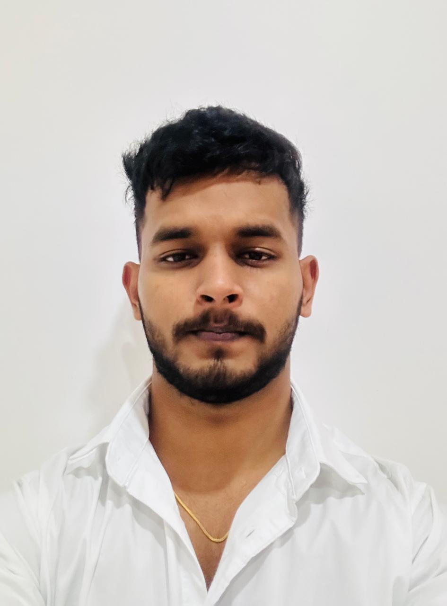

Dhanush Sanju

To continuously enhance my skills through real-world experience, innovation, and collaboration. I strive to create solutions that bring value to people and organizations, while maintaining integrity, quality, and passion in everything I do.
Success, to me, means consistent growth — learning from challenges, achieving goals, and positively impacting others. It’s not just about reaching a destination but evolving with purpose, confidence, and a commitment to excellence in every step of my journey.
I am a proud student of NMAM Institute of Technology (NMIT), Nitte, where I have gained a strong foundation in Information Science and honed my technical, analytical, and problem-solving skills. During my time here, I have actively participated in coding competitions, hackathons, and workshops, enhancing my proficiency in programming, data analysis, and web development. I have successfully completed projects involving AI, machine learning, and full-stack development. Beyond academics, I have developed teamwork, leadership, and communication skills. My achievements include top ranks in coding contests, innovative project presentations, and contributing to community-driven tech initiatives.
NMAMIT Nitte offers a variety of clubs to nurture students’ interests and skills. Coding, robotics, and AI clubs enhance technical expertise, while management and entrepreneurship clubs develop leadership, teamwork, and communication. These clubs encourage collaboration, innovative thinking, and practical learning, allowing students to explore their passions and prepare for future careers.
The college organizes diverse events to provide hands-on experience and exposure. Hackathons, coding competitions, and tech fests challenge students to innovate and solve real-world problems. Workshops, seminars, and cultural events offer learning, networking, and personal growth opportunities. These events help students showcase talent, gain recognition, and build confidence in their abilities.
B.E. Information Science, NMAMIT Nitte: CGPA 7.9
12th Standard: Secured 93% in 12th grade, demonstrating strong academic performance.
10th Standard: Passed with 80%, building a solid foundational knowledge.
NMAM Institute of Technology | Aug–Oct 2024 | Project of the Year (EXPRO 2024–25) Built a mobile app for object detection, text reading, and product identification for the visually impaired .
A Data Science Internship Project Using Machine Learning at DLithe Consultancy Services Pvt. Ltd. A smart meal planner that uses machine learning to recommend recipes based on user nutrition goals and ingredients, built during a data science internship at DLithe.
NMAM Institute of Technology Built a basic smart home system using IoT sensors (DHT11, LDR) and ESP32 for environmental monitoring and automation..
NITK–STEP IEEE Industrial Internship Program Built an assistive system using sensors and embedded tech for obstacle detection and navigation, focusing on real-world application integration and deployment.